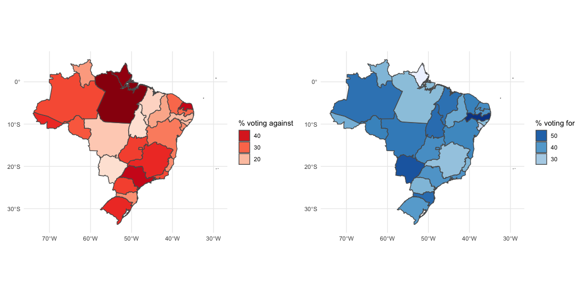
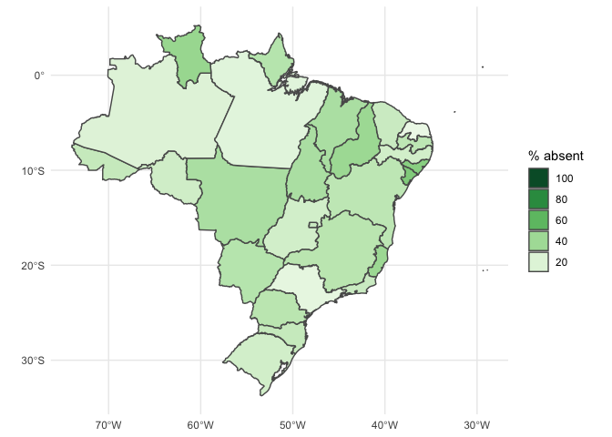

Brazilian Legislative Data with congressbr
Recently, a paper by myself and two friends was published in the Latin American Research Review (you can read it here). As we write in the paper:
The purpose of making such a package is to put useful and interesting political science data in the hands of researchers. Our goal is to provide a suite of easy-to-use functions that even the novice R user can understand and use to produce analyses of Brazilian politics. This opens up the analysis of such data to more scholars than was previously possible, as studies such as those cited in the text have often been restricted to those with significant programming experience, or to those with the time and resources to collect data by hand.
Plenty of social science researchers are not a) interested in programming and/or b) not very good programmers (probably because of a). We decided to make congressbr to help those researchers and to publicise the availability of this data (legislative analyses on Brazil can be theory-heavy and data-light…not saying this is a bad thing, just that we wanted to help introduce more data into things). We chose R because non-programmers can get set up and get working very quickly, particularly with RStudio. In this brief post, I’ll show how can you make a neat map using congressbr and a few more R packages, cos hey, everybody loves political maps. Well, I do. For more information on congressbr, please see the paper or the package repository on GitHub.
Perhaps the quickest way to get up and running is to load one of the datasets available in the package:
library(congressbr)
data("sen_nominal_votes")
head(sen_nominal_votes)
## # A tibble: 6 x 9
## vote_date bill_id bill legislature senator_id senator_name senator_vote senator_party
## <dttm> <chr> <chr> <chr> <chr> <chr> <dbl> <chr>
## 1 1991-06-06 00:00:00 19615 PLC:… 49 31 Guilherme P… 1 PFL
## 2 1991-06-06 00:00:00 19615 PLC:… 49 47 Jose Sarney 1 PMDB
## 3 1991-06-06 00:00:00 19615 PLC:… 49 82 Amazonino M… 1 PDC
## 4 1991-06-06 00:00:00 19615 PLC:… 49 33 Humberto Lu… 1 PMDB
## 5 1991-06-06 00:00:00 19615 PLC:… 49 79 Valmir Camp… 1 PTB
## 6 1991-06-06 00:00:00 19615 PLC:… 49 84 Antonio Mar… 1 PMDB
## # … with 1 more variable: senator_state <chr>So what’s this? Well, this dataframe is a record of nominal votes in the Senado Federal from 1991 to 2017. It contains the datetime of the vote, the ID of the bill, the ‘name’ of the bill, senator IDs, names, party and state affiliation and recorded vote (1 = ‘Yes’, 0 = ‘No’, NA = didn’t vote). Let’s pick a random entry (I’m using knitr::kable() so that we can see all the columns of the result):
library(dplyr)
set.seed(12345)
sen_nominal_votes %>%
sample_n(1) %>%
knitr::kable()| vote_date | bill_id | bill | legislature | senator_id | senator_name | senator_vote | senator_party | senator_state |
|---|---|---|---|---|---|---|---|---|
| 2015-11-24 | 122739 | MPV:2015:00688 | 55 | 3695 | Lindbergh Farias | 1 | PT | RJ |
…aaaand we can see that Senator Lindbergh Farias voted ‘Yes’ to MPV 00688 in November 2015. So who’s this senator? Let’s see. We can use the ID to look the senator up:
sen_senator(3695) %>%
select(2, 4:6, office_email) %>%
knitr::kable()| name_full | gender | date_of_birth | place_of_birth | office_email |
|---|---|---|---|---|
| Luiz Lindbergh Farias Filho | M | 1969-12-08 | Joao Pessoa | lindbergh.farias@senador.leg.br |
You could even email him if you wanted.
So this random entry is on an ‘MPV’ type of vote. This stands for Medida Provisória, and is basically a President-introduced bill that goes to the top of the legislative agenda until it is voted on. Presidents can keep re-introducing it (which they do) and thereby dominate the legislative agenda. Voting for MPVs is usually taken as a sign of government support, although many MPVs can be uncontroversial so it’s not so clear-cut. Anyway, let’s make a map! We’ll recode the NA values so that they are "2", since these could be deliberate absences and we could make use of this information.
library(stringr)
states <- sen_nominal_votes %>%
filter(str_detect(bill, "MPV")) %>%
select(senator_vote, senator_state) %>%
mutate(
senator_vote = ifelse(
is.na(senator_vote), 2, senator_vote) %>%
as.character()
) %>%
count(senator_state, senator_vote) %>%
group_by(senator_state) %>%
mutate(
summ = sum(n),
perc = 100*(n/summ)
) %>%
ungroup()states
## # A tibble: 82 x 5
## senator_state senator_vote n summ perc
## <chr> <chr> <int> <int> <dbl>
## 1 AC 0 30 81 37.0
## 2 AC 1 29 81 35.8
## 3 AC 2 22 81 27.2
## 4 AL 0 16 81 19.8
## 5 AL 1 27 81 33.3
## 6 AL 2 38 81 46.9
## 7 AM 0 27 81 33.3
## 8 AM 1 38 81 46.9
## 9 AM 2 16 81 19.8
## 10 AP 0 38 81 46.9
## # … with 72 more rowsSo with those totals we can integrate this data with some other things we’ll use. First, let’s get the spatial data:
library(rnaturalearthhires)
library(sf)
br <- states10 %>%
st_as_sf() %>%
filter(admin == "Brazil") %>%
select(senator_state = postal, geometry)Join these together:
states <- states %>%
full_join(br) %>%
st_as_sf()Now let’s make our maps. We’ll use {patchwork} to put them together.
library(ggplot2)
against <- states %>%
filter(senator_vote == "0") %>%
ggplot(aes(fill = perc)) +
geom_sf() +
scale_fill_distiller(palette = "Reds", direction = 1) +
theme_minimal() +
guides(fill = guide_legend(
reverse = TRUE, title = "% voting against"))
forr <- states %>%
filter(senator_vote == "1") %>%
ggplot(aes(fill = perc)) +
geom_sf() +
scale_fill_distiller(direction = 1) +
theme_minimal() +
guides(fill = guide_legend(
reverse = TRUE, title = "% voting for"))
absent <- states %>%
filter(senator_vote == "2") %>%
ggplot(aes(fill = perc)) +
geom_sf() +
scale_fill_distiller(palette = "Greens", direction = 1) +
theme_minimal() +
guides(fill = guide_legend(
reverse = TRUE, title = "% absent"))library(patchwork)
against + forr + plot_layout(ncol = 2)
absent
There you go! Some pretty basic plotting and data munging aside, the code necessary to create these is quite minimal, and the data easily available from congressbr.